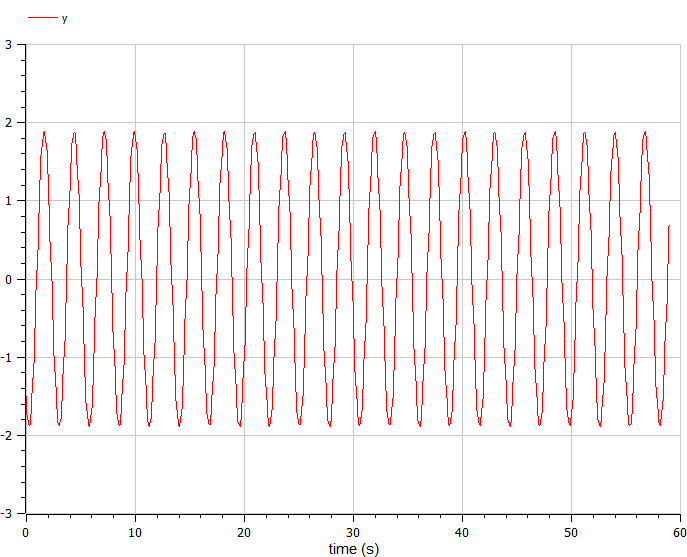
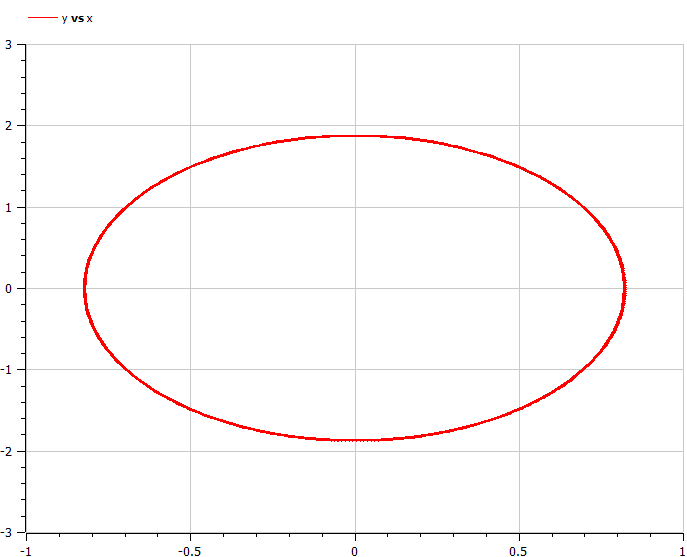
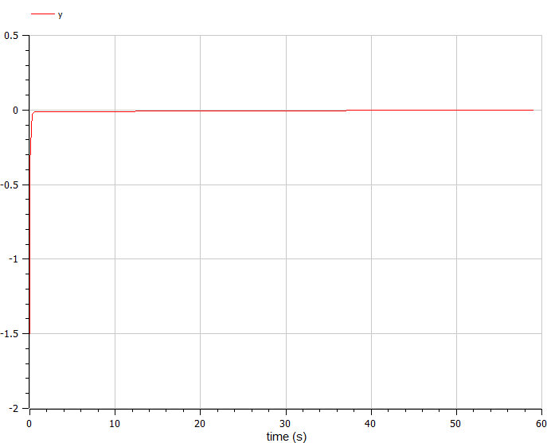
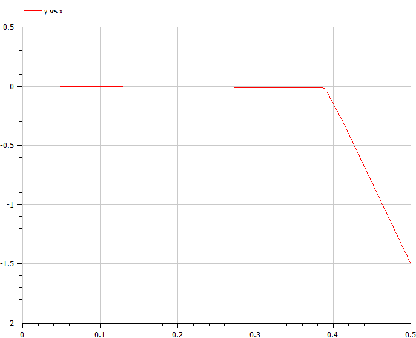
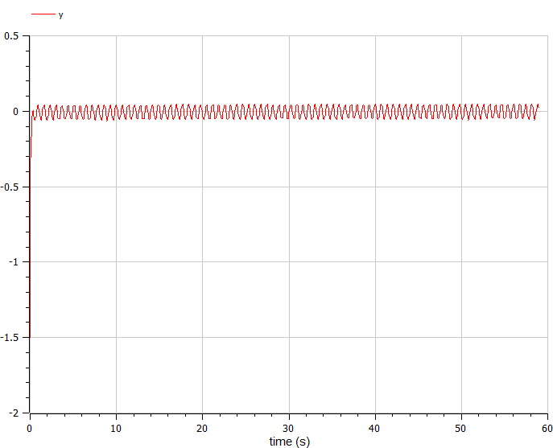
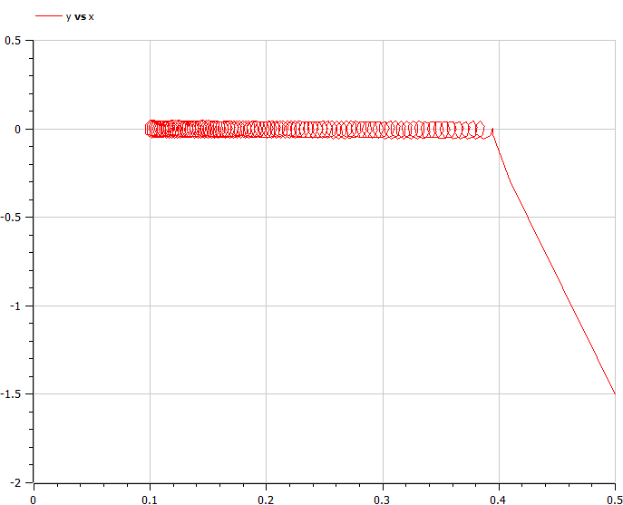

Title: Модель гармонических колебаний Author: Алламе Ормиз
Institute: Российский Университет Дружбы Народов
Date: 25 февраля, 2024, Москва, Россия
Изучить уравнение гармонического осцилятора
Движение грузика на пружинке, маятника, заряда в электрическом контуре, а также эволюция во времени многих систем в физике, химии, биологии и других науках при определенных предположениях можно описать одним и тем же дифференциальным уравнением, которое в теории колебаний выступает в качестве основной модели. Эта модель называется линейным гармоническим осциллятором. Уравнение свободных колебаний гармонического осциллятора имеет следующий вид: $$\ddot{x}+2\gamma\dot{x}+\omega_0^2=0$$
При отсутствии потерь в системе ( $\gamma=0$ ) получаем уравнение консервативного осциллятора энергия колебания которого сохраняется во времени. $$\ddot{x}+\omega_0^2x=0$$ Для однозначной разрешимости уравнения второго порядка необходимо задать два начальных условия вида
$$
\begin{cases}
x(t_0)=x_0
\
\dot{x(t_0)}=y_0
\end{cases}
$$
Уравнение второго порядка можно представить в виде системы двух уравнений первого порядка:
$$
\begin{cases}
x=y
\
y=-\omega_0^2x
\end{cases}
$$
Начальные условия для системы примут вид:
$$
\begin{cases}
x(t_0)=x_0
\
y(t_0)=y_0
\end{cases}
$$
Постройте фазовый портрет гармонического осциллятора и решение уравнения гармонического осциллятора для следующих случаев
На итнтервале $t \in [ 0;59 ]$, шаг 0.05, $x_0=0.5, y_0=-1.5$
$$\ddot{x}+5.2x=0$$
{ #fig:001 width=70% height=70% }
$$\ddot{x}+5.2x=0$$
{ #fig:002 width=70% height=70% }
$$\ddot{x}+14\dot{x}+0.5x=0$$
{ #fig:003 width=70% height=70% }
$$\ddot{x}+14\dot{x}+0.5x=0$$
{ #fig:004 width=70% height=70% }
$$\ddot{x}+13\dot{x}+0.3x=0.8\sin{9*t}$$
{ #fig:005 width=70% height=70% }
$$\ddot{x}+13\dot{x}+0.3x=0.8\sin{9*t}$$
{ #fig:006 width=70% height=70% }
В ходе выполнения лабораторной работы были построены решения уравнения гармонического осциллятора и фазовые портреты гармонических колебаний без затухания, с затуханием и при действии внешней силы.